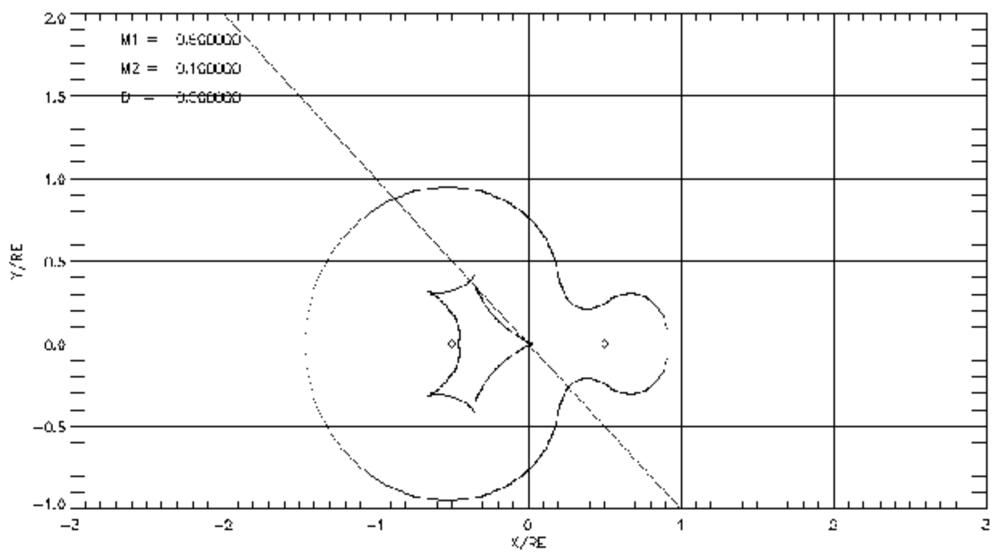

The source plane coordinate system, (u,ν), has its origin at the
point where the optical axis intersects the source plane.
Deflection of light by multiple lenses
Each mass deflects a light ray from the source by angle
α = 4GM/c2b.
The total deflection is the vector sum of the deflections
by each mass.
E.g. a ray which intersects the lens plane at ξ = (x1, y1),
has a total deflection for a lens with i = 1 - n masses of:
$$\bar{\alpha}(\bar{\xi}) = \sum_{i}\left( \frac{4GM_{i}}{c^{2}}\frac{\bar{\xi} - \bar{\xi_{i}}}{|\bar{\xi} - \bar{\xi_{i}}|^{2}}\right),$$
Deflection for a binary lens
For a binary lens this becomes:
$$\bar{\alpha}(\bar{\xi}) = \frac{4GM_{1}}{c^{2}}\frac{\bar{\xi} - \bar{\xi_{1}}}{|\bar{\xi} - \bar{\xi_{1}}|^{2}} + \frac{4GM_{2}}{c^{2}}\frac{\bar{\xi} - \bar{\xi_{2}}}{|\bar{\xi} - \bar{\xi_{2}}|^{2}},$$
where ξ̄1,2 are the vector positions of the projection points
of masses M1,2 in the lens plane geometry.
The Binary Lens Equation
We now write the lens equation in a form relating the lightray origin in
the source plane (η(u,ν)) to the total deflection angle:
$$\bar{\eta} = \bar{\xi}\frac{D_{S}}{D_{L}} - D_{LS}\bar{\alpha}(\bar{\xi}),$$
By substituting, we get:
$$\frac{\bar{\eta}}{D_{S}} = \frac{\bar{\xi}}{D_{L}} - \frac{4GM_{1}}{c^{2}}\frac{\bar{\xi} - \bar{\xi_{1}}}{|\bar{\xi} - \bar{\xi_{1}}|^{2}}\frac{D_{LS}}{D_{S}} - \frac{4GM_{2}}{c^{2}}\frac{\bar{\xi} - \bar{\xi_{2}}}{|\bar{\xi} - \bar{\xi_{2}}|^{2}}\frac{D_{LS}}{D_{S}},$$
The Binary Lens Equation
This is simplified by declaring:
| $$\bar{w}(u,\nu) = \frac{\bar{\eta}}{D_{S}},$$ |
$$\bar{z}(x,y) = \frac{\bar{\xi}}{D_{L}},$$ |
$$m_{i} = \frac{4GM_{i}D_{LS}D_{L}}{c^{2}D_{S}},$$ |
and we arrive at:
$$\bar{w} = \bar{z} - m_{1}\frac{\bar{z} - \bar{z_{1}}}{|\bar{z} - \bar{z_{1}}|^{2}} - m_{2}\frac{\bar{z} - \bar{z_{1}}}{|\bar{z} - \bar{z_{1}}|^{2}},$$
Mapping between the lens and source planes
This represents a mapping between the source and lens planes:
A lightray from point w̄(u,ν) in the source plane will hit the lens
plane at z̄(x,y).
The inverse problem - extracting the locations of the
source images in the lens plane geometry - requires complex root-finding
techniques explored in detail by Schneider & Weiss (1986).
In complex notation,
| $$w = z - m_{1}\frac{1}{\bar{z} - \bar{z_{1}}} - m_{2}\frac{1}{\bar{z} - \bar{z_{2}}},$$ |
$$w = u + i\nu,$$ |
$$z = x = iy,$$ |
where w, z are complex numbers and z̄ is the complex conjugate of z.
Source Images
To find the number and locations of the source images produced we need to
produce an expression for z in terms of w - the inverse of the lens
equation. The complex conjugate of the binary lens equation is:
$$\bar{w} = \bar{z} - m_{1}\frac{1}{z - z_{1}} - m_{2}\frac{1}{z - z_{2}}$$
Source Images
Solving this expression for z̄ and substituting, we get:
$$z = w + \sum_{i=1,2}m_{i}\left[\bar{w} - \bar{z_{i}} + \sum_{k=1,2}m_{k}(z - z_{k})^{-1}\right]^{-1}$$
This expression generates a polynomial equation in z of order
(n2 + 1), where n is the number of lensing masses.
For a binary lens, there are up to 5 solutions, of which either
3 or 5 may be real, depending on the lens-source projected separation.
Amplification for a binary lens
In order to calculate the magnification of a binary lens, we can take a similar
approach to that for a single lens, and calculate the inverse of the area
distortion of the lens mapping:
$$A = \left| det \frac{\partial\bar{w}(u,\nu)}{\partial\bar{z}(x,y)} \right|^{-1},$$
Amplification for a binary lens
To derive an expression for this we need the 'gradient' of a vector function, or
the matrix of first-order partial derivatives, known as the Jacobian matrix.
This may be written:
| $$J = \begin{bmatrix} \frac{\partial u}{\partial x} & \frac{\partial u}{\partial y} \\ \frac{\partial \nu}{\partial x} & \frac{\partial \nu}{\partial y} \end{bmatrix}$$ |
$$J = \left| \frac{\partial w}{\partial z} \right|^{2} - \left|\frac{\partial w}{\partial z}\right|^{2},$$ |
Amplification for a binary lens
For n lensing bodies, the Jacobian is:
$$J = 1 - \left[ \sum_{n} m_{n}(\bar{z} - \bar{z_{n}})^{-2}\right]^{2} = 1 - (\bar{\kappa})^{2},$$
and for a binary lens is:
$$J = 1 - \left( \frac{m_{1}}{(\bar{z} - \bar{z_{1}})^{2}} + \frac{m_{2}}{(\bar{z} - \bar{z_{2}})^{2}}\right)^{2},$$
The inverse Jacobian matrix elements are:
| $$\frac{\partial z}{\partial w} = \frac{1}{J},$$ |
$$\frac{\partial z}{\partial \bar{w}} = -\frac{\bar{\kappa}}{J},$$ |
Amplification for a binary lens
The total amplification is given by the sum of the absolute amplification of each image i:
$$A = \sum_{i=1}^{n}A_{i} = \sum_{i=1}^{n}|\det J|^{-1}.$$
Critical Curves
Mathematically, the nature of this solution has a curious feature.
As the source moves behind the binary lens, there are certain
positions in the source plane for which the resulting Jacobian determinant
drops to zero.
These positions form graceful curves, known as 'critical curves'.
Theoretically, as the source crosses the critical curve, the magnification
becomes inifinite. In reality, finite source effects curtail it to merely
'high', but these situations can still result in very dramatic
brightenings of the source by several magnitudes.
Caustics

Applying the lens equation, the positions of the critical curve in the source
plane can be mapped into the lens plane geometry -
resulting in generally spiky curves known as 'caustics'.
This plot shows the loop of the critical curve in the source plane and
the spiky caustic in the central region between the
masses. The straight line indicates the source's relative motion during
the event.
Number of Lensed Images
The number of images changes as the source moves across the caustic curve.
Outside of it, there are 3 images; one outside the critical curve and two
inside it, usually close to one of the masses.
Two more images exist within the region defined by the caustic - one inside
and one outside the critical curve.
Its interesting to bear in mind that the caustic curve represents the
maximum magnification, and within the caustic this can actually
drop.
For wide binary lenses, the magnification mid-caustic can drop back almost
to baseline.
Caustic variety
The expressions derived here depend on the ratio, q, of the masses of the
lensing bodies and their positions in the lens plane, relative to the
angular separation of the source as a function of time.
These factors dictate the shape and extent of the caustics and a wide
variety of shapes are possible.
Caustics and Source Trajectories
The source can take any trajectory, relative to the lens geometry, so the
lightcurve for the same binary lens can look quite different depending on
the angle of incidence.
Double-horned peaks
A wide range of lightcurves can result, but one common feature is a
'double-peak' structure - the first peak caused by the source crossing into
the caustic region, the second caused by it exiting the caustic.
Depending on the size of the caustic, the trajectory and relative velocity,
the peaks can be hours or days apart.
Planetary caustics
Notice though, that a binary lens of any q will produce caustics.
As a result, provided the source has a favourable relative trajectory,
even an extreme mass ratio binary like a planetary system will produce
a detectable magnification.
This makes microlensing uniquely sensitive to even low mass planetary
companions.
The caustic region for low mass ratio lenses is generally smaller, so the
crossing time (the duration of the anomaly) is usually shorter
- so higher cadence lightcurves are required to to characterize them.
The probability of the source trajectory crossing the caustic is also
smaller, but this is factor compensated for by surveys covering
large numbers of stars.
Further reading
-
Paczyński, B. (1996), Ann. Rev. A&A, 34, 419
-
Bourassa, R. (1973), ApJ, 185, 747
-
Schneider, P. Ehlers, J. & Falco, E. (1992), Gravtitational Lenses, Springer-Verlag
- Schneider, P. & Weiss, A. (1986), A&A, 164, 237